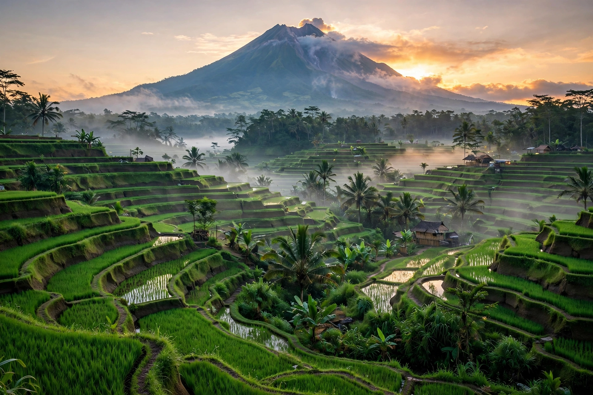

Indonesia, officially the Republic of Indonesia, is a country in Southeast Asia and Oceania between the Indian and Pacific oceans. It consists of over 17,000 islands, including Sumatra, Java, Sulawesi, and parts of Borneo and New Guinea, making it the world's largest archipelagic state. With more than 280 million people, Indonesia is the world's fourth-most populous country and the most populous Muslim-majority nation. Its capital and largest city is Jakarta; a new capital, Nusantara, is under construction in East Kalimantan.

| Indonesia | |
|---|---|
| Capital | Jakarta (de facto); Nusantara (under construction) |
| Largest city | Jakarta |
| Official language | Indonesian (Bahasa Indonesia) |
| Government | Unitary presidential republic |
| Independence | Proclaimed 17 August 1945; recognised by the Netherlands 27 December 1949 |
| Area | ~1.9 million km² land; 14th largest country |
| Population | ~284 million (2024 estimate) |
| Currency | Indonesian rupiah (IDR) |
The archipelago was home to early human populations and later to Hindu-Buddhist kingdoms such as Srivijaya and the Javanese Mataram Kingdom, which built the great temples of Borobudur and Prambanan in the 8th–9th centuries. Islam spread through trade from the 13th century. The Dutch East India Company (VOC) and then the Dutch state colonised the islands over three centuries as the Dutch East Indies. After Japanese occupation in the Second World War, Sukarno and Mohammad Hatta proclaimed independence on 17 August 1945; the Netherlands recognised Indonesian sovereignty in 1949 after a four-year revolution.
Sukarno's "Guided Democracy" gave way in 1965–66 to Suharto's authoritarian, anti-communist "New Order", amid mass killings of alleged communists in which at least half a million people died. Suharto ruled for 31 years until the Asian financial crisis forced his resignation in 1998, ushering in the Reformasi era of democracy, decentralisation, and direct presidential elections.
Indonesia straddles the equator along the Pacific Ring of Fire and has more active volcanoes than any other country. Its rainforests — among the world's largest — harbour exceptional biodiversity, including orangutans, Sumatran tigers, and Komodo dragons. The Wallace Line, dividing Asian from Australasian fauna, runs through the archipelago. Indonesia's climate is tropical, with monsoon wet and dry seasons.
Indonesia is a presidential republic and the world's third-largest democracy. It is a founding member of ASEAN, a member of the G20, and Southeast Asia's largest economy, driven by natural resources (palm oil, coal, nickel, natural gas), manufacturing, agriculture, and a growing digital sector. National ideology is expressed in the Pancasila, the five principles of state philosophy.
More than 1,300 ethnic groups and 700 living languages make Indonesia one of the world's most diverse countries; the Javanese are the largest group, and Bahasa Indonesia serves as the unifying national language. About 87% of Indonesians are Muslim, with significant Christian, Hindu (concentrated in Bali), Buddhist, and Confucian minorities; the state officially recognises six religions. Cultural landmarks include gamelan music, wayang puppet theatre, batik textiles, and the Hindu-Buddhist temples of Java and Bali.